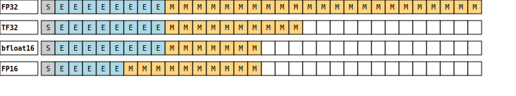

Control MXU Floating Point Precision¶
Author: Yaoshiang Ho
Date created: 2025/05/15
Last modified: 2025/05/15
In this tutorial, you will learn how to control the floating point precision of matrix multiplication (mat mul) operations when using certain accelerators with PyTorch/XLA, such as TPUs. You will also learn how to access torch’s floating point info and how to visually inspect the floating point representation of numbers.
Introduction¶
Google TPUs are built with matrix multiplication optimized on silicon in a physical module called a Matrix Multiply Unit or MXU. To maintain speed, researchers identified an inexpensive tradeoff. The research showed that neural networks were able to train with less precision than FP32 “without having any noticeable impact on model accuracy”. The same was not true for range. Due to operations like norms, FP32’s range was important to keep. The solution was bfloat16: the same range as FP32, with less precision.
Nvidia V100 and newer GPUs also include specialized matrix multiplication units called TensorCores. These GPUs use a numerical format called TF32, which has the same range as FP32 and bfloat16, but an intermediate precision (10 bits of mantissa) because TF32 only has 19 total bits.
Matrix multiplication operations performed on FP32 values will yield results in bfloat16 for TPUs and TF32 (with 19 bits) for Nvidia GPUs.

Higher precision math on lower precision hardware¶
Even with the 7 mantissa bits of bfloat16, it is possible to calculate math in higher precision. This is done by breaking up a number into its components. To build intuition, imagine an MXU that supports 2 digits in a base-10 (decimal) number system. The goal is to multiply numbers with 4 digits of precision, for example, $9.111$ and $9.222$. In infinite precision, the product is $84.021642$. Notice that two numbers with 4 digits of precision generates twice as many digits of precision in the result. But given the number format is 4 digits, the result will be rounded to $84.02$.
The simplest approach is to round the numbers to $9.1$ and $9.2$, resulting in $83.72$. This is conceptually the “default” precision setting of PyTorch/XLA on TPU.
The next approach is to break each number up into two parts, high and low (H and L): $(9.1 + 0.011) \times (9.2 + 0.022)$. This equals $(H \times H + H \times L + L \times H + L \times L)$. The first three matrix multiplications comprise the three-pass approach and roughly doubles the effective precision. The fourth term, $L \times L$, is ignored and looking at the result, $0.000242$, it is easy to see that this value will not contribute to the final result. Some values of $L \times L$ could generate a fourth term that moves the value by one bit, but adding one bit of information half the time provides little value relative to the cost of running another multiplication.
+--------+--------+
| 9.222 |
+--------+--------+
| 9.2 | 0.022 |
+--------+--------+--------+--------+
|9.111 | 9.1 |83.72 | 0.2002 |
+--------+--------+--------+--------+
| | 0.011 | 0.1012 | | = 84.0214 => 84.02
+--------+--------+--------+--------+
Extending this approach again would yield roughly triple the precision. The idea is to break the number into into high, medium, and low (H, M, and L), generating nine possible terms: $(H + M + L) \times (H + M + L) = HH + HM + MH + MM + HL + LH + ML + LM + LL$. The final three are ignored, and the first six comprise the six-pass approach. It is essentially equivalent to FP32, with some room for variances in the minor bit.
PyTorch/XLA and TPUs¶
PyTorch/XLA allows control of the one-pass, three-pass, and six-pass
approaches in the torch_xla.backends.set_mat_mul_precision()
function.
The valid values are default, high, and highest. Now, you’ll investigate
the differences between these three settings.
Warning: Although this notebook demonstrates setting precision multiple times it is recommended to only set the precision once at the beginning of your script.
Preparations¶
Make sure you are running this tutorial on a TPU. You can access a TPU using Google Colab.
Import the required packages.
import torch
import torch_xla.backends
torch.set_printoptions(precision=20, sci_mode=False, linewidth=240)
WARNING:root:libtpu.so and TPU device found. Setting PJRT_DEVICE=TPU.
Epsilon is the minimum difference between 1.0 and the next highest representable number. Retrieve the value out from torch.
eps = torch.finfo(torch.bfloat16).eps
print(f"bfloat16 epsilon: {eps}")
print(f"return type of torch.finfo: {type(eps)}")
bfloat16 epsilon: 0.0078125
return type of torch.finfo: <class 'float'>
The epsilon is also defined as 1 / 2^p, where p is the number of bits in the mantissa.
print(1 / (2**7))
0.0078125
Numbers in between may get rounded up to 1.0 + epsilon, or down to 1.0.
print(
torch.tensor(
[1.0, 1.0 + eps / 4.0, 1.0 + eps / 2, 1.0 + eps * 3 / 4, 1.0 + eps],
dtype=torch.bfloat16,
))
tensor([1.00000000000000000000, 1.00000000000000000000, 1.00000000000000000000, 1.00781250000000000000, 1.00781250000000000000], dtype=torch.bfloat16)
Get ready to look directly at bits¶
Set up tools to convert binary strings to FP32 numbers, and vice versa. Create a function to generate a random matrix.
In general, when testing an MXU (or TensorCore), pass matrices to encourage XLA to use the MXU rather than the slower but more precise units for FP32.
import struct
def binary_fraction_to_fp32(bstr: str) -> float:
if bstr[:4] != "0b1.":
raise ValueError(f"Invalid binary string: {bstr}")
fraction_bits = bstr[4:]
mantissa = 1.0
for i, bit in enumerate(fraction_bits):
mantissa += int(bit) * 2**-(i + 1)
return float(mantissa)
def fp32_to_binary_fraction(fp32_float: float) -> str:
x_bytes = struct.pack(">f", fp32_float) # Big-endian IEEE 754 float32
as_int = struct.unpack(">I", x_bytes)[0] # Interpret bits as uint32
sign = (as_int >> 31) & 0b1
exponent = (as_int >> 23) & 0xFF
mantissa = as_int & 0x7FFFFF # lower 23 bits
return f"FORMAT:0b SIGN:{sign} EXPONENT:{exponent:08b} MANTISSA:{mantissa:023b} VALUE={fp32_float}"
def get_rand_matrix():
"""Returns a diagonal matrix of shape 1024, 1024, values between 0.999 and 1.111"""
eye = torch.eye(1024, dtype=torch.float32, device="xla")
rand_ = torch.rand(
(1024, 1024), dtype=torch.float32, device="xla") * 0.2 + 0.9
result = eye * rand_
assert torch.nonzero(result).size(0) == 1024, torch.nonzero(result).size(0)
return result
Examining a number¶
Generate an FP32 number representing 1 + bf16_eps/2. This will put one extra bit out of reach of a bfloat16’s mantissa.
one_plus_half_eps = binary_fraction_to_fp32("0b1." + "0" * 7 + "1" + "0" * 15)
print(f"FP32 : {one_plus_half_eps }")
print(f"1 + eps/2: {1.0 + eps / 2}")
FP32 : 1.00390625
1 + eps/2: 1.00390625
Print the bits for FP32 and BF16. Notice that the 8th bit is lost. This reconfirms that BF16 cannot represent the 8th bit of precision.
print(f"FP32: {fp32_to_binary_fraction(one_plus_half_eps)}")
ones_bf16 = torch.tensor(
one_plus_half_eps, dtype=torch.bfloat16).to(torch.float32).item()
print(f"BF16: {fp32_to_binary_fraction(ones_bf16)}")
FP32: FORMAT:0b SIGN:0 EXPONENT:01111111 MANTISSA:00000001000000000000000 VALUE=1.00390625
BF16: FORMAT:0b SIGN:0 EXPONENT:01111111 MANTISSA:00000000000000000000000 VALUE=1.0
MXU¶
Place your numbers of interest in a diagonal matrix. By putting them in a matrix, XLA will execute the math on the MXU. By making the matrices diagonal, the math will be equivalent to element-wise multiplication.
Notice that the values are essentially rounded down to 1.0 before being multiplied, resulting in 1.0 as the output. This is the loss of precision that occurs in a TPU.
X = get_rand_matrix()
Y = get_rand_matrix()
X[0, 0] = one_plus_half_eps
Y[0, 0] = one_plus_half_eps
Z = torch.matmul(X, Y)
print(f"X: {fp32_to_binary_fraction(X[0][0].item())}")
print(f"Y: {fp32_to_binary_fraction(Y[0][0].item())}")
print(f"Z: {fp32_to_binary_fraction(Z[0][0].item())}")
X: FORMAT:0b SIGN:0 EXPONENT:01111111 MANTISSA:00000001000000000000000 VALUE=1.00390625
Y: FORMAT:0b SIGN:0 EXPONENT:01111111 MANTISSA:00000001000000000000000 VALUE=1.00390625
Z: FORMAT:0b SIGN:0 EXPONENT:01111111 MANTISSA:00000000000000000000000 VALUE=1.0
FP32 precision on bfloat16 hardware¶
The 3 and 6 pass approaches generate more bits of precision. Turn on the highest precision mode (six passes) and run the experiment again. Notice that the TPU has calculated FP32 precision.
Z_ref = torch.matmul(
X.to("cpu").to(torch.float32),
Y.to("cpu").to(torch.float32))
print(f"Z_ref: {fp32_to_binary_fraction(Z_ref[0][0].item())}")
torch_xla.backends.set_mat_mul_precision("highest")
Z = torch.matmul(X, Y)
print(f"Z: {fp32_to_binary_fraction(Z[0][0].item())}")
WARNING:torch_xla.backends:Setting mat mul precision multiple times is not recommended. If you need to do so, please empirically verify that the precision setting is behaving as expected.
Z_ref: FORMAT:0b SIGN:0 EXPONENT:01111111 MANTISSA:00000010000000010000000 VALUE=1.0078277587890625
Z: FORMAT:0b SIGN:0 EXPONENT:01111111 MANTISSA:00000010000000010000000 VALUE=1.0078277587890625
Edge-case numbers¶
In the previous example, you saw no difference between the six-pass and FP32 multiplication. Now, you will use an edge case number to demonstrate a difference in the final bit between the six-pass approach and full FP32.
X = get_rand_matrix()
Y = get_rand_matrix()
X[0, 0] = 1.2
Y[0, 0] = 1.2
Z_ref = torch.matmul(
X.to("cpu").to(torch.float32),
Y.to("cpu").to(torch.float32))
print(f"Z_ref: {fp32_to_binary_fraction(Z_ref[0][0].item())}")
torch_xla.backends.set_mat_mul_precision("highest")
Z = torch.matmul(X, Y)
print(f"Z: {fp32_to_binary_fraction(Z[0][0].item())}")
WARNING:torch_xla.backends:Setting mat mul precision multiple times is not recommended. If you need to do so, please empirically verify that the precision setting is behaving as expected.
Z_ref: FORMAT:0b SIGN:0 EXPONENT:01111111 MANTISSA:01110000101000111101100 VALUE=1.440000057220459
Z: FORMAT:0b SIGN:0 EXPONENT:01111111 MANTISSA:01110000101000111101101 VALUE=1.4400001764297485
Conclusion¶
In this tutorial, you learned how to control the floating point precision of your matrix multiplication (mat mul) operations. You also learned the internal algorithm used to generate higher precision through the three-pass and six-pass approaches.